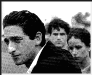
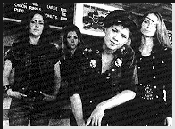
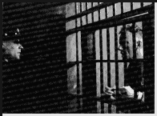
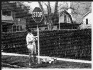

Contents | Features | Reviews | News | Archives | Store

Contents | Features | Reviews | News | Archives | Store
 |
22nd Seattle
International |
If the question is how to get your independent film recognized at a film festival this year, the answer seems to fall along the lines of: mimicking Tarantino's violence-with-a-smile sensibility and then filtering it through the Scorsesean motif of the high personal cost of being loyal to your criminal community.
All too often the net result on screen is charmless. The disease has been latent, but is now approaching epidemic proportions. There is a surfeit of first-time directors whose idea of making that 'deep personal statement' consists of nothing more than merely forming a quorum of losers with exaggerated Noo Jirsey/Brooklynese accents, placing them in a bruisingly-large late-model sedan on its last legs (wheels?) and ensuring that their moral dilemmas are sufficiently ambiguous to inspire whatever little narrative suspense can be mustered under these depressing circumstances. And, if you can set the film in the worst sections of Newark, so much the better for generating 'instant atmosphere'.
Aside from promoting the stereotype of New Jersey as an area that exists only to provide low-level gangsters and high-level toxic waste (which may be true to a certain extent, but, as my friends from New Jersey are always quick to inform me, there are nice areas in the state), the films are so dull you can slice them - or, rather, you would, if there was anything palatable to be gained from the procedure.
Among the really egregious offenders is Eric Bross's debut film, the ineptly titled and even-more-ineptly-executed Nothing to Lose. It is nothing more than a combination of the structures of Scorsese's Who's That Knocking At My Door? and Mean Streets without any of their intelligence and spirit. Renting these films instead of seeing Bross's piece of celluloid harlotry would be a much more sensible idea. Laurence O'Neil's Throwing Down tries to disguise its debts to Scorsese and Tarantino by moving the action halfway through the film to a cabin in Virginia, assuming that the addition of low-life hicks is a useful compliment to the low-life Noo Yawkers who make a habit of selling shavings from urinal deodorant blocks as high-grade coke. It isn't, and they aren't.
On the brighter side of the underside of life, Alan Taylor's Palookaville is several cuts above its competition. We've all seen this sort of thing before - robbing an armored car is seen as a desperate group's ticket to somewhere better than where they currently are (shades of last year's Heat and Siodmak's Criss Cross) - but Taylor invests some highly valuable time in creating well-rounded characters for whom an audience can feel some sort of empathy, and his gamble pays off. The usually sardonic tone that one finds in these sorts of films has been softened to a more ironic stance; most of the characters in Palookaville know that the joke of life is on them. They are the rankest of amateurs up against 'the system', but, to their surprise, they discover that the system isn't necessarily any more competent than they are; it simply has more force at its disposal.
The midnight screenings have been of the consistency expected from products that melt evenly on a piece of bread under a broiler, and have been as satisfying. Jack Hill's 1975 exploitation classic, Switchblade Sisters, is loaded with deliciously bad acting and scripting, not to mention the requisite 1970s wardrobe (bell bottoms, platform shoes, mismatched patterns on that space-aged fiber known as bulletproof polyester - is anybody breaking out in hives yet?). As if Mr. Tarantino hadn't enough of a presence, however indirect, at this year's festival, his company, Rolling Thunder, is responsible for the re-release of Switchblade Sisters, presumably to improve our intellects. If the film makes it across the pond, watch in the final credits for the name of one Tak Fujimoto, then a second unit cameraman, now Jonathan Demme's cinematographer of choice.
Another Tarantino-inspired film is Back to Back, about a couple of yakuza who are attempting to enforce a debt owed by an American mobster and in the process get in the way of a corrupt cop, who in turn has been putting the screws to a former colleague of his. Then the colleague and the yakuza team up. It's always entertaining, but one of the highlights is a cameo by comedian Bobcat Goldthwait, playing a crazed bank robber whose demise is violently spectacular. Let's just say he provides new insight into the expression 'blowing your top'.
Also violent and spectacular is James Woods' performance as serial killer Carl Panzram in Tim Metcalfe's film, Killer: A Journal of Murderer (Metcalfe wrote the serial-killer film, Kalifornia, some three years ago), based on Panzram's memoirs as collected and published under the same title. Panzram's case was unique, not least of all because he was allowed to dictate his story under the auspices of prison guard Henry Lesser, who provided Panzram with pencil and paper in contravention of prison regulations.
The document that emerged was worthy of that much-abused adjective, 'shocking', as it provided a most unpleasant set of insights into not only the psychopathology of familial abuse, but the scarifying conditions that existed (and probably continue to exist) in the American penal system. In an interview, director Metcalfe downplayed the psychological and social aspect of the story, and expressed a belief that the film's emphasis is centered more upon the naivete of Lesser's liberal do-goodism and its inadequate response to the unadulterated and irremediable evil of Panzram who, in his writings, inadvertently revealed his own suspicions that he was born evil. In my opinion, this film accomplishes both tasks effortlessly.
Guiltier pleasures awaited in the form of Politically Incorrect Cartoondaze, a collection of animated shorts from the '30s, '40s and '50s as compiled by animation historian/expert Jerry Beck. Since one of the programs of shorts was devoted to controversial racial and sexual stereotypes, and the films' copyright holders are understandably uneasy about their public screenings, Beck was obliged to use the holdings of private collectors, themselves understandably reluctant to let the copyright holders in on their secret collections.
Among the revelations provided in the pre- and post-screening discussions was the existence of a list of eleven animated shorts that are deemed to be so racially offensive that access of any sort is made very difficult, if not impossible. The list, and several of these films, are now the property of cable magnate Ted Turner (I can personally attest to the roadblocks that the Turner organization placed in my path when, not knowing about the list, I foolishly attempted to obtain a copy of one of the proscribed cartoons for research purposes. Fortunately, other institutions, and individuals, were far more obliging). Needless to say, at least three of the films on that list, including a print of Bob Clampett's classic 1942 parody of "Snow White", "Coal Black and de Sebben Dwarfs", were shown.
Beck's response to charges that these cartoons promote offensive stereotypes is to forthrightly acknowledge the obvious: yes, they do, and they should not be shown at all on network television, nor shown at other venues, such as museums or film festivals, without prior explanation of the historical context that surrounded their production and the mentality that informed their production. But to deny their existence, or to prevent access to scholars and cartoon buffs, is to deny the truth about the overt racism that permeated American society prior to the Civil Rights movement. As one African-American man in the audience stated after the screenings, whether Americans like it or not, this is their history. I couldn't agree more.
Finally, festival life would not have been complete without Russ Hexter's immaculately-constructed documentary about the effects of socio-economic change in a place named Dadetown. Hexter and crew explore, with painstaking skill, how Dadetown residents react to the interruption of their traditional way of life when a high-tech company replaces the traditional low-tech firms as the town's chief source of revenue, providing the locals with cappuccino shops and upscale boutiques that they can't afford to frequent.
The residents' resentment against the privileged newcomers possesses a nice subliminal seething, fearful of social change and the loss of power that came from being a member of a cohesive social group. For their part, the newcomers' attitude is one of bringing 'culture' to a group of ungrateful savages. With their massive homes symbolically located outside of town, and their unquiet pride in being able to get more home for less money, they fail to understand the old ironic axiom of trying to get away from it all while taking it with you. To a person, they claim to revere the innocence of small-town life while simultaneously trying to change everything about it - except for the crime rate. Unfortunately, no one is immune from this latter element as the tensions begin to rise.
The depiction of violence and resentment is not, however, the only unfamiliar element in this documentary, but one of several, as becomes evident all too quickly. For the first twenty minutes, Dadetown plays like one of the worst hackneyed celebrations of small-town Americana imaginable, full of the usual bucolic imagery encompassing the town hall and paeans to the lifestyle's presumed innocence. Then, to quote a favorite line from a Tex Avery cartoon (in turn borrowed from an Old Gold cigarette advertisement), it slowly becomes obvious that "something new has been added". All expectations should be put on permanent hold as a newer, more subversive mindset begins to creep into the picture, like a serpent in the Norman Rockwell garden (there's a good reason why, and, for those who want the answer, it is located just below (*) next week's trailer...). Another 'unfortunately' must be added to Dadetown: Hexter died four weeks ago of an aneurysm, so his debut is, sadly, his swan song.
Next Week: There's more than gold in them thar hills, as John Sayles invites us to experience the complex interrelationships in a small Texas town in Lone Star; Doug Pray's documentary, Hype!, explores the development of grunge music as the element that briefly made Seattle the center of the musical universe in the early '90s; and girls make more than film with Celestial Clockwork, Sudden Manhattan and I Shot Andy Warhol (finally).
That's right - Dadetown is a 'mockumentary', complete with a 'cast list' in the end credits. There is no Dadetown in New York State and all of the events and people portrayed are, as they say, fictional. Knowing this does not make the film any less effective in its portraiture, however. If anything, the knowledge allows the viewer to admire the subtlety of approach to Hexter's sleight-of-hand concept.
Contents | Features | Reviews | News | Archives | Store
Copyright © 1999 by Nitrate Productions, Inc. All Rights Reserved.